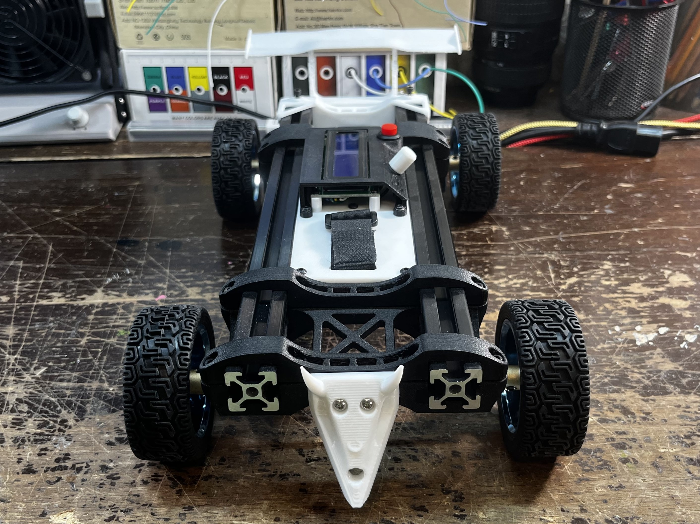
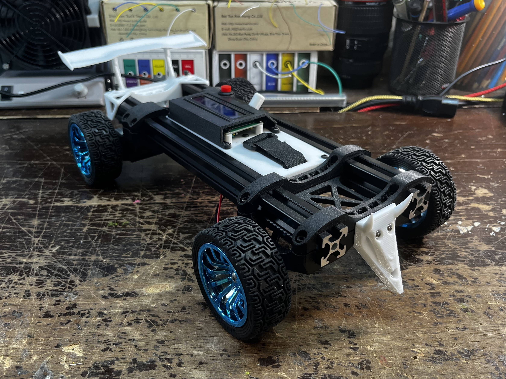
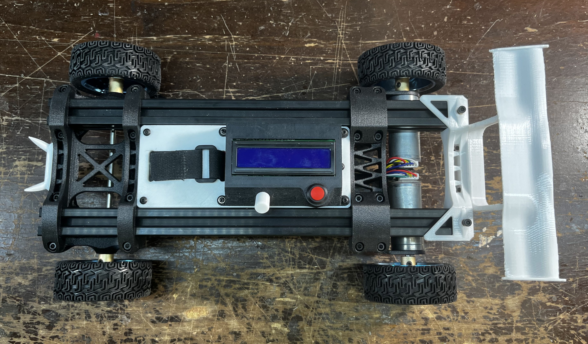
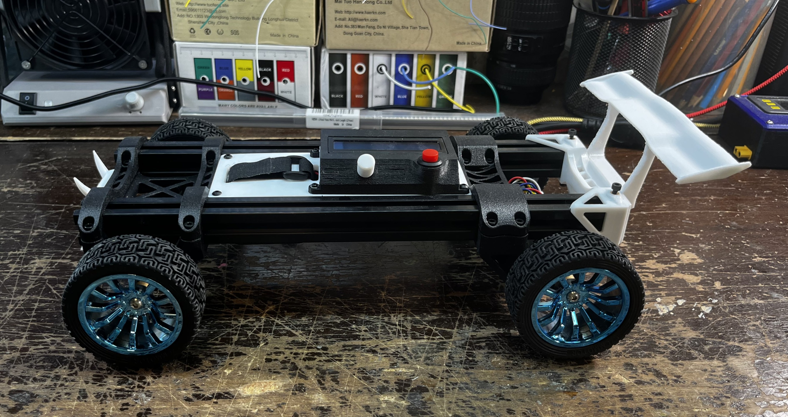
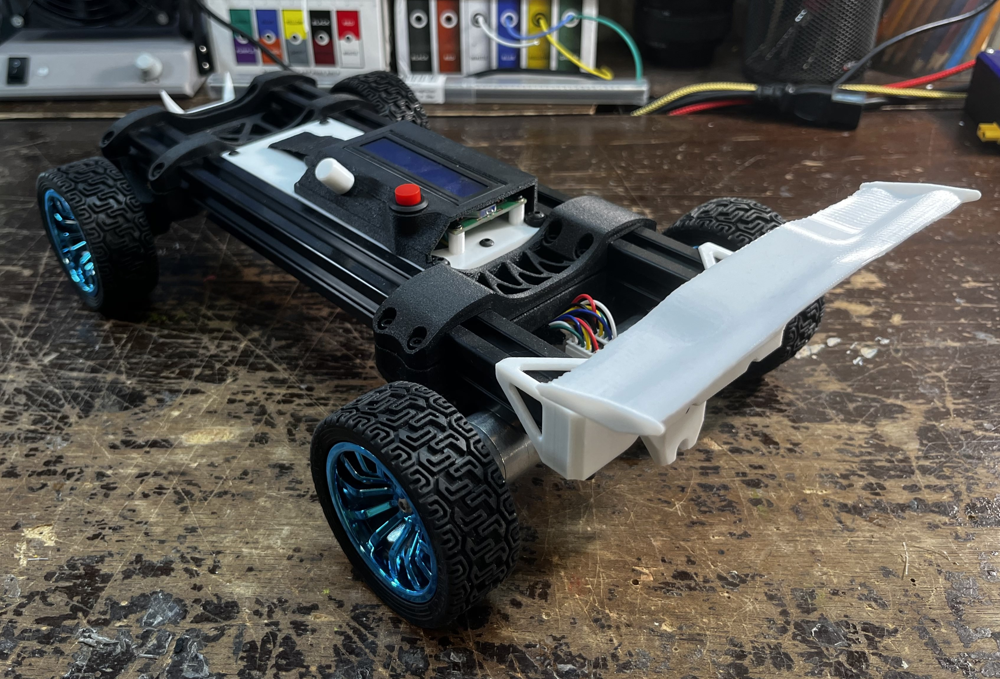
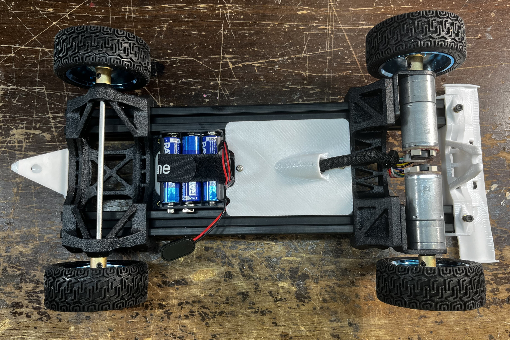
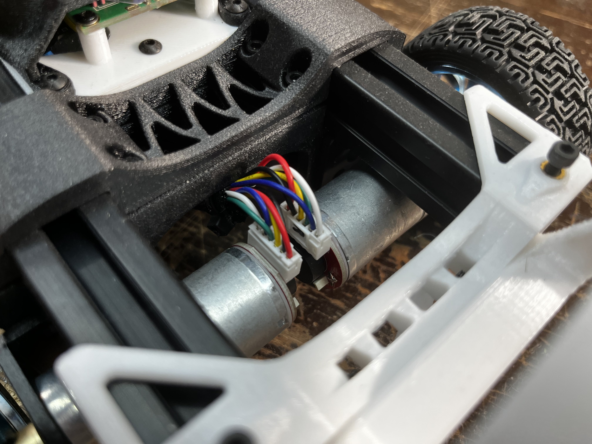
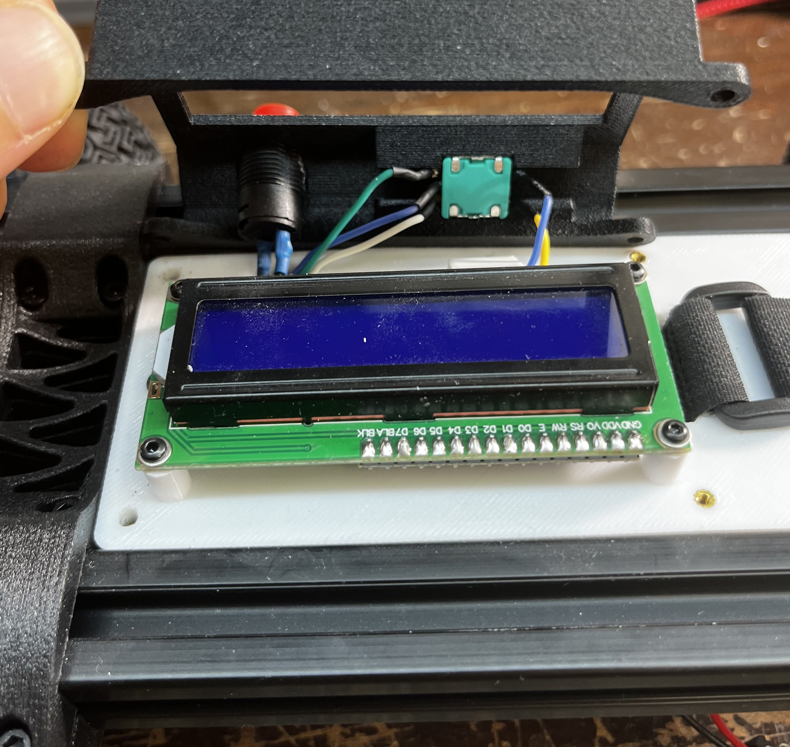
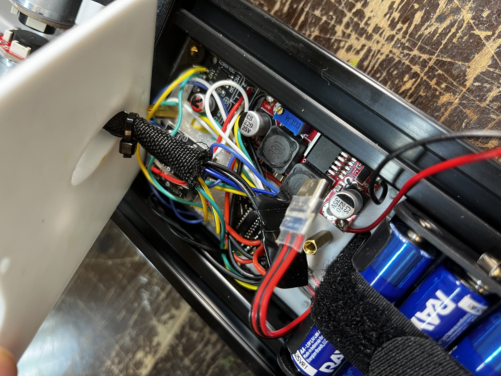
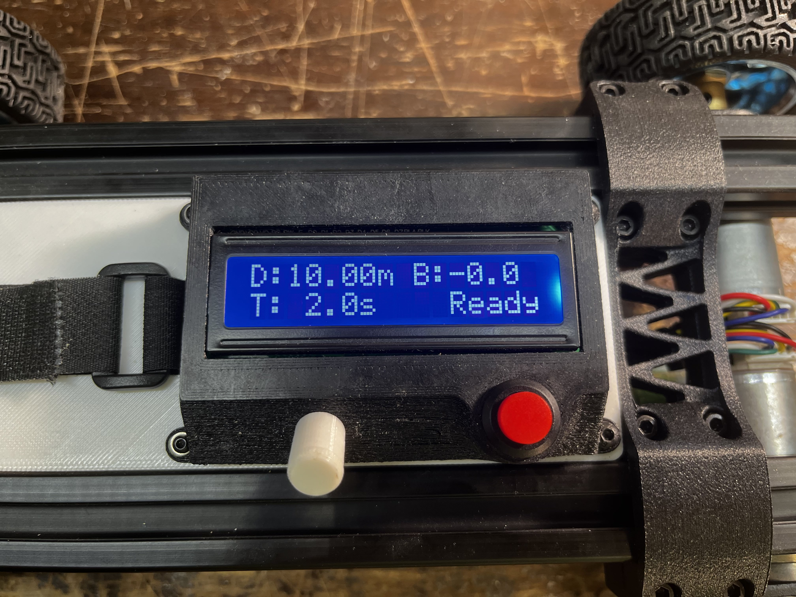

Project description placeholder. Describe what this project is, what it does, and why you built it.
User interface demo. A single rotary encoder is used to cycle through three values, the target distance D, the time in which it should be covered T, and the left / right trim value, or balance is represented by B.
Program trigger bench test. The motors run for exactly 5 seconds as the parameters request. These motors were sourced with magnetic encoders, which allows an onboard microcontroller to count the total revolutions, calculate the distance traveled using wheel diameter.

Project CAD. The entire assembly is built around two aluminum extrusions in order to keep the wheelbase square.

3D printed brackets clamp directly onto the aluminum extrusions

Originally, smooth wheels were planned but unexpected shipping delays necessitated falling back on an already available set. The larger wheel diameter reduced effective torque and acceleration, but this was compensated for in code.

While the rear wheels are directly driven by their respective motor, the front wheels are connected and locked together in rotation by a 4mm shaft rotating in bearings that were press fitted into the bracket

The space between the front and rear brackets is just enough to fit the battery pack and an electronics bay

The rear wing is not only for improved downforce (kdding), the white part to which it is attached is an alignment bracket that butts up against the ends of the extrusions and locks in their alignment.

The motor wires are managed using a textile sleeve and run through a port designed into the electronics bay cover

Each encoded motor require six connection to work properly. Two of these supply power to the motor, while to remaining four generate alternating high / low signals as the rotor spins that can be read by a microcontroller. Pulses are continuously counted, and dividing the sum by the number of pulses generated in one revolution of the stator yields the total number of revolutions. Dividing this value by the reduction factor of the gearbox then yields the output shaft revolution. Multiplying this by the circumference of the wheel finally yields the distance traveled.

A 16x2 LCD screen was used to create a basic user interface. Each of the four corners allow a unique field to be displayed, granted it is shorter than eight characters.

Contents of the electronics bay: A voltage regulator which supplies the motors with constant and predictable power regardless of how drained the batteries are. An arduino nano which runs the project code. Two brushed motor controllers, one for each motor, which respond to commands sent by the microcontroller

Ready state, set for a very fast run